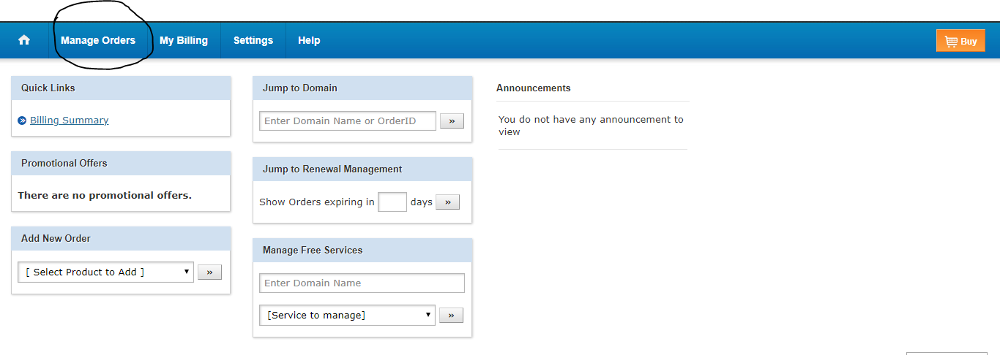
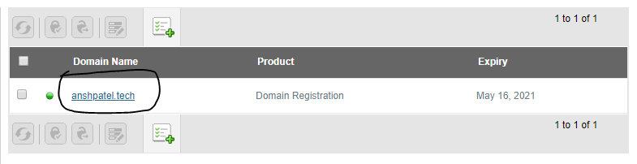
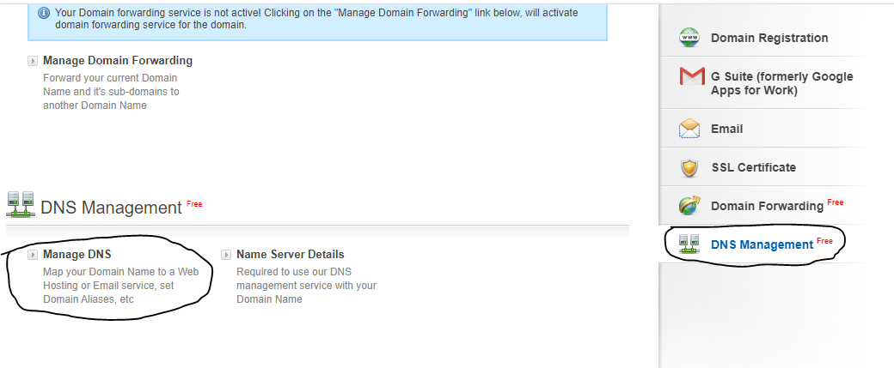
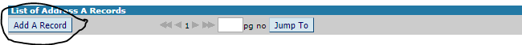
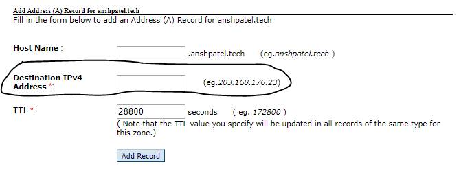
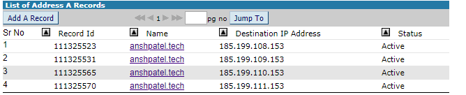
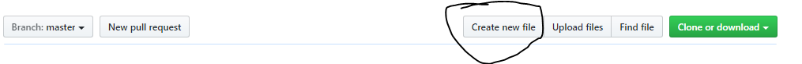
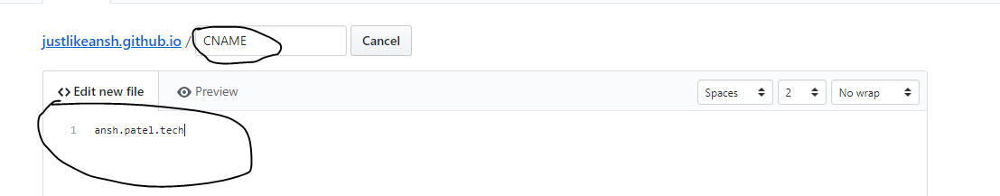

Today, I will show you how to configure a custom domain for your GitHub Pages site. In this tutorial, I'll be using a .tech domain that I received for free from the GitHub Student Developer Pack. Let's get started!
Step 1: Locate Your Domain Orders
First, log in to your domain registrar's control panel. Find your domain management page or look for your active orders list.

Step 2: Access Your Domain Details
In your orders list, click on the specific domain name that you want to link to your GitHub Pages site.

Step 3: Open DNS Management
Scroll down or find the section labeled DNS Management, and click on Manage DNS.

Step 4: Configure GitHub's A Records
You will see a DNS records table. Click on Add A Record. You need to add GitHub's official IP addresses one by one. Create an A record for each of the following four IP addresses, setting the host name/value to @:
185.199.108.153185.199.109.153185.199.110.153185.199.111.153



Step 5: Create a CNAME File in your Repository
Now, go to your repository on GitHub. Click on **Add file** and select **Create new file**.

Step 6: Write your Domain in CNAME
Name the new file exactly CNAME (in uppercase, without any extension). Inside the file, type your raw domain name (for example, anshpatel.tech).

Step 7: Save & Verify
Click on **Commit new file** to save it. Within a few minutes, DNS changes will propagate. Search for your custom domain in the browser, and your GitHub Pages site will load successfully!
Thank You!
If you have any questions or ran into issues, feel free to get in touch with me via the contact details on the homepage.